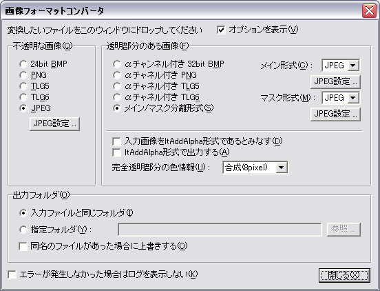

変換は、変換したいファイルを画像フォーマットコンバータのウィンドウの上にドロップすることで行うことができます。複数のファイルをドロップする事もできます。
不透明な画像、透明部分を持った画像にそれぞれ別の形式を指定することができます。
ここで言う「不透明な画像」とは、画像全域が完全に不透明な画像(たとえば、KAGで使うような背景画像)を言います。「透明部分を持った画像」とは、透明になる部分がある画像(たとえばKAGで使うような前景画像)を言います。
なお、画像形式として等価情報を持っている形式でも、結果的に画像のすべてのピクセルが完全不透明であれば、「不透明な画像」として扱われます。
変換終了後、各ファイルの変換が成功したか、エラーになったかを確認できるログが表示されますので確認してください。
以下は、画面の説明です。

実行すると、上の画面が表示されます。
- 「オプションを表示」
- チェックされている状態では、下の設定部分が表示されます。チェックをはずすと、ウィンドウは上部部分だけとなり、横に細長くなります。オプション設定が必要ない場合にウィンドウをコンパクトにすることができます。
- 「不透明な画像 - 24bit BMP」
- 不透明な画像の出力形式として 24bit BMP を選択します。
- 「不透明な画像 - PNG」
- 不透明な画像の出力形式として PNG を選択します。
- 「不透明な画像 - TLG5」
- 不透明な画像の出力形式として TLG5 を選択します。
- 「不透明な画像 - TLG6」
- 不透明な画像の出力形式として TLG6 を選択します。
- 「不透明な画像 - JPEG」
- 不透明な画像の出力形式として JPEG を選択します。
- 「不透明な画像 - JPEG オプション...」
- 不透明な画像の出力形式として JPEG を選択した場合の、JPEG の圧縮クオリティを選択します。
- 「透明部分のある画像 - 32bit BMP (メイン+マスク)」
- 透過情報を持った画像の出力形式として 32bit BMP を選択します。
- 「透明部分のある画像 - αチャネル付き PNG (メイン+マスク)」
- 透過情報を持った画像の出力形式として アルファチャネル付き PNG を選択します。
- 「透明部分のある画像 - αチャネル付き TLG5 (メイン+マスク)」
- 透過情報を持った画像の出力形式として アルファチャネル付き TLG5 を選択します。
- 「透明部分のある画像 - αチャネル付き TLG6 (メイン+マスク)」
- 透過情報を持った画像の出力形式として アルファチャネル付き TLG6 を選択します。
- 「透明部分のある画像 - メイン/マスク分離形式」
- 透過情報を持った画像の出力形式としてメイン/マスク分離形式を指定します。メイン/マスクに何を用いるかを下で選択します。また、JPEG の場合、「JPEG オプション」ボタンをクリックすることによって、JPEG の圧縮クオリティを選択することができます。
- 「透明部分のある画像 - 入力画像をltAddAlpha形式であるとみなす」
- このオプションがチェックされていると、入力画像をltAddAlpha形式、つまり吉里吉里のLayer.typeプロパティでltAddAlphaを指定して表示するに適した、加算アルファ合成形式であると見なします。このオプションに影響される入力画像形式はBMP、PNG、メイン/マスク分離形式で、PSD形式は影響されません。
このオプションがチェックされていないと、入力画像はltAlpha形式であると見なされます。ほとんどのグラフィックソフトの出力形式やPNGの仕様はltAlpha形式である為、通常はこのオプションはチェックしないでください。
このオプションのチェックされていない状態で、かつ後述の「ltAddAlpha形式で出力する」がチェックされていると、画像フォーマットコンバータはltAlpha形式からltAddAlpha形式への変換を行います。
このオプションをチェックすると、「ltAddAlpha形式で出力する」のオプションは自動的にチェックされます。また、「完全透明部分の色情報」のオプションは使用不可になります(アルファ情報も色情報も画像フォーマットコンバータでは加工されなくなります)。
- 「透明部分のある画像 - ltAddAlpha形式で出力する」
- このオプションがチェックされていると、出力画像をltAddAlpha形式で出力します。
このオプションがチェックされていないと、出力画像の形式はltAlpha形式、あるいは PSD ファイルからの入力の場合はそのファイルに含まれているレイヤーのブレンドモードに対応した形式になります。
様々なグラフィックソフトや、PNGの仕様ではltAlpha形式の画像のみを受け付けますので、出力画像を吉里吉里に使用する訳ではない場合は、通常はチェックしないでください。
このオプションがチェックされていると、「完全透明部分の色情報」のオプションは使用不可になります(アルファ情報も色情報も画像フォーマットコンバータでは加工されなくなります)。
- 「透明部分のある画像 - 完全透明部分の色情報」
- 画像の完全に透明な部分の処理を指定します。
通常、ltAlpha 形式の画像の場合、完全に透明な部分でも色の情報を持っています。その部分は完全に透明なので表示するときは単に無視されるのですが、画像の加工 ( JPEG等による圧縮も含む ) を行うときは無視されません。
この完全に透明な部分の処理の方式を指定します。
- 除去
- 除去を指定すると、完全に透明な部分の色情報は除去されます ( 正確には真っ黒で塗りつぶされる )。
通常はこの指定でOKです。
- そのまま
- 処理を行いません。元の画像そのままになります。
完全透明部分にゴミがある場合、そのゴミまで圧縮することになるので圧縮率が悪くなります。
- 合成
- 完全透明部分の色を、その周りにある不透明な部分の色から推測し、合成します。
合成の強度を 1, 2, 3, 5, 8 pixel から選べます。ここでピクセル単位で指定された距離内にある不透明な部分のピクセルの色から、完全透明部分の色を合成します。値が大きいほど処理に時間がかかります。ここで指定した距離外にある完全透明な部分の色は除去されます。
たとえば JPEG でメイン画像を圧縮する場合、JPEG の特性上、急激な色の変化がある場所ではモスキートノイズが発生します。これは前景画像の場合、もし「合成」処理をおこなわず、完全不透明部分と不透明部分の境界で急激な色の変化がある場合、その部分に発生しやすくなります。「合成」処理を行うと、完全透明部分の色を不透明部分の色から合成するため、色の変化の差を抑え、モスキートノイズの発生を抑えることができます。また、一般的な JPEG では 色の情報が隣のピクセルと混ざりますが、これも「合成」処理を行うことで、(合成しなかった場合の) 意図しない完全透明部分の色と不透明部分の色が混ざる事を抑えることができます。
通常は「除去」を選んでください。完全に透明な部分には色の情報は必要ありません。また除去を行えば画像の圧縮後のファイルサイズも小さくすることができます。
「ltAddAlpha形式で出力する」がチェックされている場合はこのオプションは使用不可になります。ltAddAlpha形式での「完全透明」は、不透明度0、色は真っ黒以外にあり得ないからです。
- 「出力フォルダ - 入力ファイルと同じフォルダ」
- 出力するファイルを、入力ファイルとおなじフォルダに出力するようにします。
- 「出力フォルダ - 指定フォルダ」
- 出力ファイルを、下の入力欄に指定したフォルダに出力します。
「参照 ...」ボタンをクリックすると、出力フォルダを選択するダイアログボックスを表示することができます。
入力欄に相対フォルダを指定した場合は、入力ファイルのあるフォルダからの相対位置で指定することができます。
- 「出力フォルダ - 同名のファイルがあった場合に上書きする」
- このチェックボックスをチェックすると、同名のファイルがあった場合、上書きします。
- 「エラーが発生しなかった場合はログを表示しない」
- このチェックボックスをチェックすると、変換が終わって、変換中にエラーが発生しなかった場合は、ログを確認するためのウィンドウを表示しません。
- 「閉じる」
- このツールを終了します。